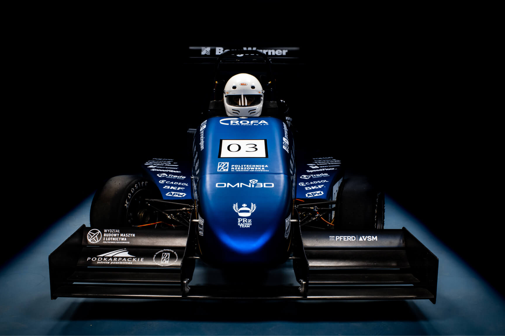

PRz Racing Team zaprezentował nowy bolid PMT-03
Autorzy: Maja Bakalarz, Anna Worosz | 2021-02-23

Zespół PRz Racing Team 20 lutego br. oficjalnie zaprezentował swoją najnowszą konstrukcję PMT-03. To już trzeci bolid wyścigowy w warsztacie, którego projekt w zeszłym roku wywalczył dla zespołu drugie miejsce w kategorii Business Presentation podczas zawodów Formula Student Virtual Event 2020. W styczniu swoją konstrukcję zespół przedpremierowo zaprezentował władzom uczelni.
PRz Racing Team jako Studenckie Koło Naukowe na Wydziale Budowy Maszyn i Lotnictwa Politechniki Rzeszowskiej funkcjonuje od 2013 r. Opiekunem koła jest dr inż. Piotr Strojny. Zespół wyścigowy co roku przygotowuje się do interdyscyplinarnych zawodów międzynarodowych Formuła Student odbywających się na torach F1. Od początku swojej działalności zbudował trzy autorskie konstrukcje bolidów wyścigowych. Wystartowały one dotychczas w ośmiu europejskich edycjach zawodów, m.in. na torach Wielkiej Brytanii, Włoch, Węgier, Holandii czy Hiszpanii, oraz w amerykańskiej edycji zawodów online. Każdy kolejny bolid ma za zadanie podnieść wiedzę i kompetencje, co przekłada się na zwiększenie zaawansowania technologicznego.
Parametry techniczne
| Nazwa parametru | Wartość |
|---|---|
| Moc | 78 KM |
| Przyspieszenie | 3.8 s |
| Masa | 214 kg |